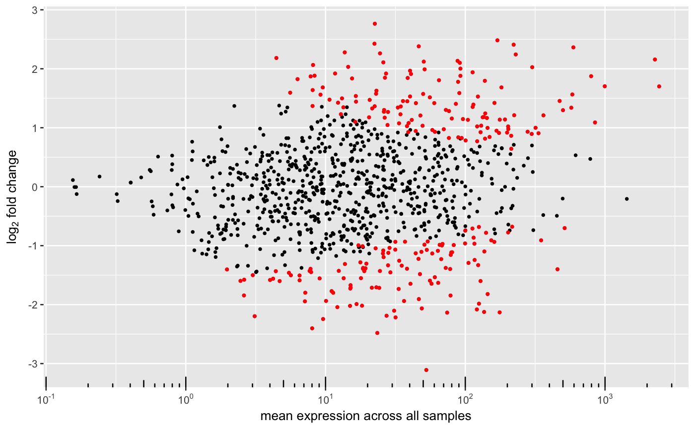

MA-plot addaptation to show the shrinking effect.
# S4 method for DEGSet plotMA(object, title = NULL, label_points = NULL, label_column = "symbol", limit = NULL, diff = 5, raw = FALSE, correlation = FALSE, ...)
| object | DEGSet class. |
|---|---|
| title | Optional. Plot title. |
| label_points | Optionally label these particular points. |
| label_column | Match label_points to this column in the results. |
| limit | Absolute maximum to plot on the log2FoldChange. |
| diff | Minimum difference between logFoldChange before and after shrinking. |
| raw | Whether to plot just the unshrunken log2FC. |
| correlation | Whether to plot the correlation of the two logFCs. |
| ... | Optional parameters to pass. |
MA-plot ggplot.
#>#>#>#>#>#>#>#>#>plotMA(res[["condition_B_vs_A"]])#> Warning: Removed 1 rows containing missing values (geom_point).#> Warning: Removed 1 rows containing missing values (geom_point).#> Warning: Removed 1 rows containing missing values (geom_segment).